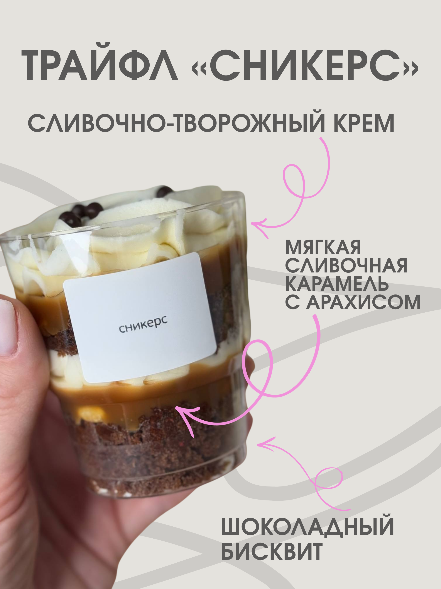
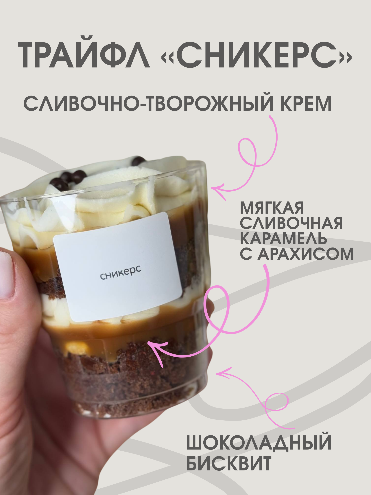
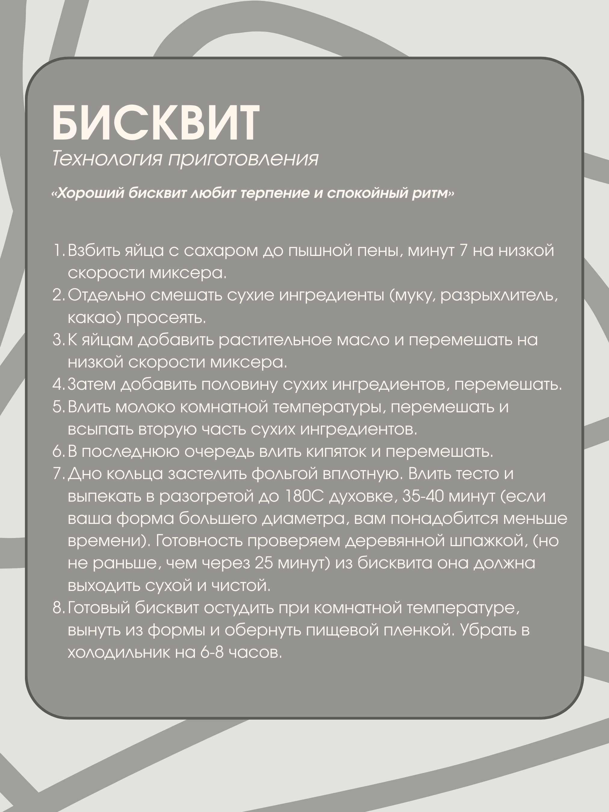
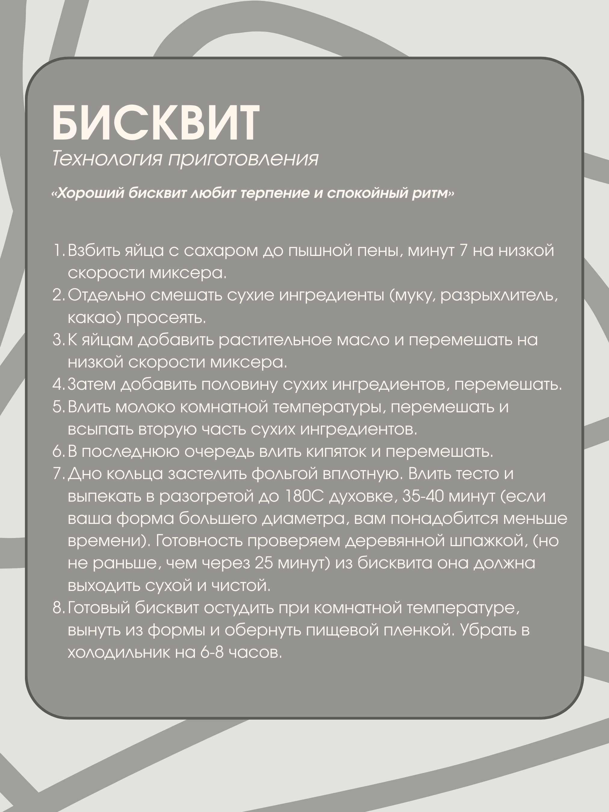

Если у вас не открылся QR-код от 6 января, то дублируем информацию ссылкой:
https://telegra.ph/darii-07-28
Не забудьте отключить VPN, если ссылка не откроется с первого раза.
 

 



Открыть гайд и посмотреть видео приготовления трайфла
можно по этой ссылке!
Не забудьте отключить VPN, если ссылка не откроется с первого раза.
Тем, кто хочет продолжить эксперименты на кухне, Ира дарит еще один гайд за подписку на свой канал.
Подписаться на канал и забрать гайд!